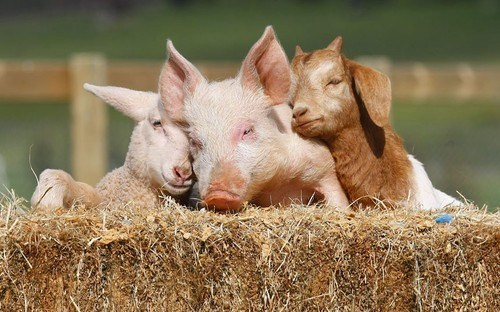
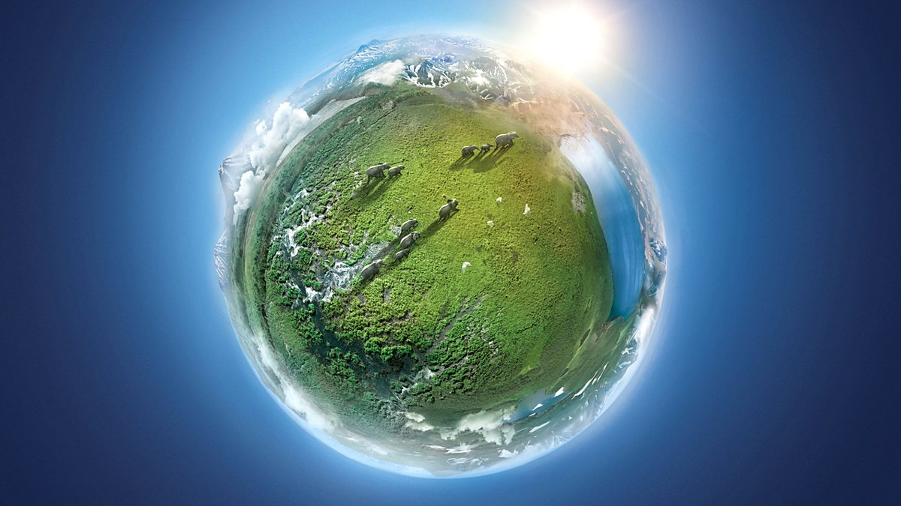
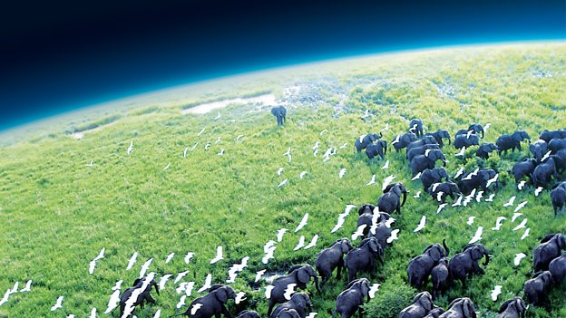

In a seminal booklet that he both designed and wrote, Carl Dair showed how in typography, as in music, harmony and contrast are the keys to composition.
Preventing the exploitation of animals is not the only reason for becoming vegan, but for many it remains the key factor in their decision to go vegan and stay vegan. Having emotional attachments with animals may form part of that reason, while many believe that all sentient creatures have a right to life and freedom. Specifics aside, avoiding animal products is one of the most obvious ways you can take a stand against animal cruelty and animal exploitation everywhere. A more detailed overview on why being vegan demonstrates true compassion for animals can be found here.
Well-planned vegan diets follow healthy eating guidelines, and contain all the nutrients that our bodies need. Both the British Dietetic Association and the American Academy of Nutrition and Dietetics recognise that they are suitable for every age and stage of life. Some research has linked vegan diets with lower blood pressure and cholesterol, and lower rates of heart disease, type 2 diabetes and some types of cancer.Going vegan is a great opportunity to learn more about nutrition and cooking, and improve your diet. Getting your nutrients from plant foods allows more room in your diet for health-promoting options like whole grains, fruit, nuts, seeds and vegetables, which are packed full of beneficial fibre, vitamins and minerals.
From recycling our household rubbish to cycling to work, we're all aware of ways to live a greener life. One of the most effective things an individual can do to lower their carbon footprint is to avoid all animal products. This goes way beyond the problem of cow flatulence!
Well-planned vegan diets follow healthy eating guidelines, and contain all the nutrients that our bodies need. Both the British Dietetic Association and the American Academy of Nutrition and Dietetics recognise that they are suitable for every age and stage of life. Some research has linked vegan diets with lower blood pressure and cholesterol, and lower rates of heart disease, type 2 diabetes and some types of cancer.Going vegan is a great opportunity to learn more about nutrition and cooking, and improve your diet. Getting your nutrients from plant foods allows more room in your diet for health-promoting options like whole grains, fruit, nuts, seeds and vegetables, which are packed full of beneficial fibre, vitamins and minerals.
The production of meat and other animal products places a heavy burden on the environment - from crops and water required to feed the animals, to the transport and other processes involved from farm to fork. The vast amount of grain feed required for meat production is a significant contributor to deforestation, habitat loss and species extinction. In Brazil alone, the equivalent of 5.6 million acres of land is used to grow soya beans for animals in Europe. This land contributes to developing world malnutrition by driving impoverished populations to grow cash crops for animal feed, rather than food for themselves. On the other hand, considerably lower quantities of crops and water are required to sustain a vegan diet, making the switch to veganism one of the easiest, most enjoyable and most effective ways to reduce our impact on the environment. For more on how veganism is the way forward for the environment, see our environment section.
Just like veganism is the sustainable option when it comes to looking after our planet, plant-based living is also a more sustainable way of feeding the human family. A plant-based diet requires only one third of the land needed to support a meat and dairy diet. With rising global food and water insecurity due to a myriad of environmental and socio-economic problems, there's never been a better time to adopt a more sustainable way of living. Avoiding animal products is not just one of the simplest ways an individual can reduce the strain on food as well as other resources, it's the simplest way to take a stand against inefficient food systems which disproportionately affects the poorest people all over the world. Read more here on how vegan diets can help people.
The suffering caused by the dairy and egg industry is possibly less well publicised than the plight of factory farmed animals. The production of dairy products necessitates the death of countless male calves that are of no use to the dairy farmer, as well as the premature death of cows slaughtered when their milk production decreases. Similarly, in the egg industry, even 'ethical' or 'free range' eggs involve the killing of the 'unnecessary' male chicks when just a day old.
It's tempting to want to believe that the meat we eat is ethical, that our 'food animals' have lived full, happy lives and that they have experienced no pain or fear at the slaughterhouse. Yet the sad truth is that all living creatures (even those labelled 'free range' or 'organic') fear death, just as we do. No matter how they are treated when alive, they all experience the same fear when it comes to slaughter.
The good news is there IS something we can do about it. Every time we shop or order food in a restaurant - every time we eat - we can choose to help these animals. Every time we make the switch from an animal product to a vegan one we are standing up for farmed animals everywhere. Going vegan is easier than ever before with veganism becoming increasingly mainstream as more and more people from all walks of life discover the benefits of living this way.